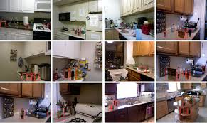

Scene Recognition using Transfer Learning
October - December 2017

Description
The project includes scene recognition including different scene categories such as: Kitchen, Bedroom, and Corridor. Furthermore, implementing different classification techniques and comparing them is also part of our study. The project attempts to solve this problem using Convolutional Neural Networks. This project also utilizes and compares various approaches such as Transfer Learning and the bag-of-words model for the purpose of indoor scene recognition.
Methodology
- Implemented Transfer Learning using a pre-trained Convolutional Neural Network.
- Additionally, designed a Convolutional Neural Network model from scratch in MATLAB
- Compared the above mentioned approaches, earlier implemented Nearest Neighbour and SVM classifier approaches.
Results
The results of the study are listed in the table below.

I. Confusion Matrix (Bag of Features with Nearest Neighbor Classifier). The figure below shows confusion matrix for scene classification using Bag of Features with Nearest Neighbor Classifier:
II. Confusion Matrix (Bag of Features with SVM Classifier). The figure below shows confusion matrix for scene classification using Bag of Features with SVM Classifier:
III. Confusion Matrix (CNN built from scratch). The figure below shows confusion matrix for scene classification using CNN designed from scratch :
IV. Confusion Matrix (Transfer Learning with a Pre-Trained CNN). The figure below shows confusion matrix for scene classification using Transfer Learning with a pre-trained network.:
Conclusion
Through this project, we learned all about the intricacies of convolutional neural networks and their use in image recognition tasks. Based on the comparative results, we concluded that Neural Networks perform better than other classification methods used in this project for the purpose of indoor scene recognition. We also saw that the bag-of-words model was more confident in classifying images from the kitchen, whereas the CNNs were most confident about classifying corridors. Another important observation was that to improve the accuracy of CNNs, a huge dataset of objects or scenes is required.